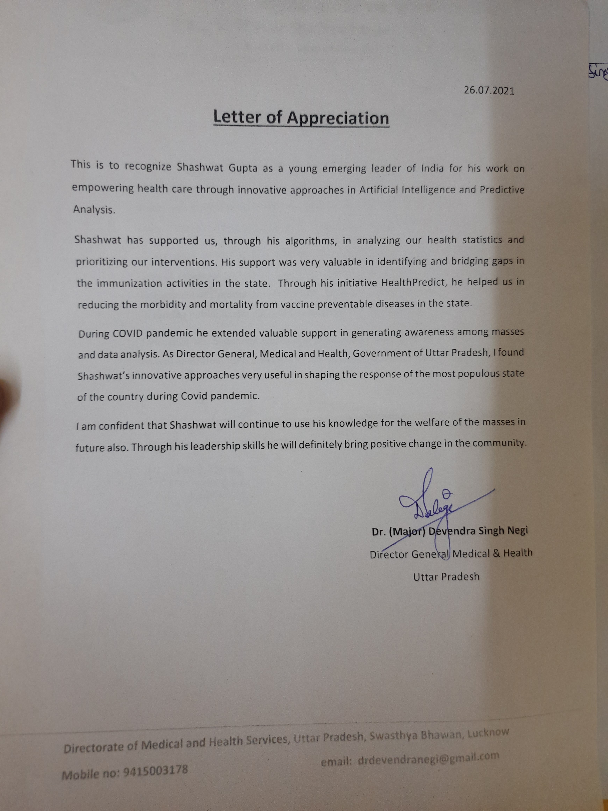
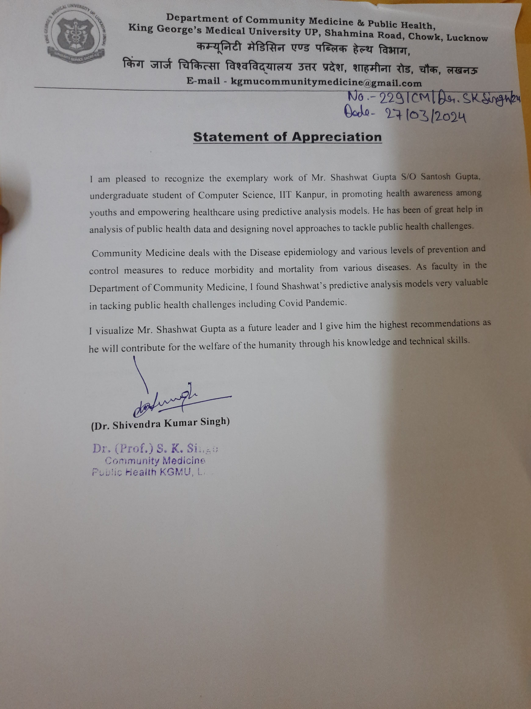

HealthPredict
Building an Impactful Pro-Bono Initiative in College
During my undergraduate years at IIT Kanpur, I embarked on a rigorous, two-year journey building my own pro-bono initiative, HealthPredict. Rooted in the desire to leverage technology for tangible social impact, HealthPredict was conceived to address pressing issues within the healthcare sector by utilizing artificial intelligence to predict and manage health risks for the masses in India.
Building an initiative from the ground up while balancing the demanding academic courseload taught me more than any classroom could. From navigating the complexities of product development and user research in the medical domain to understanding the fundamentals of public-private partnerships, this two-year experience fundamentally shaped my perspective. I spent countless nights iterating on models, pitching to government officials, and witnessing firsthand how technology intersects with real-world public health infrastructure and business strategy.
Our Core Projects & Impact
Through HealthPredict, my team and I collaborated directly with state bodies to deploy AI-driven solutions at scale. Over two years, we launched three critical initiatives:
1. COVID-19 Predictive Awareness & Strategy
During the terrifying peak of the COVID-19 pandemic, we realized that rural populations in Uttar Pradesh (India's most populous state) were not receiving timely information. We developed targeted data analysis frameworks that predicted outbreak hot zones based on mobility and localized reporting. Presenting our findings to the state government allowed authorities to preemptively allocate oxygen cylinders and shape strategic intervention responses, potentially saving thousands of lives in under-resourced districts.
2. Statewide Immunization Tracking & Risk Stratification
A major anecdotal turning point for HealthPredict was visiting a rural clinic where vaccination records were entirely paper-based and heavily disorganized. We ingested and analyzed extensive, fragmented health statistics to identify missing links in immunization activities. Our algorithms mapped out underserved zones, bridging gaps in the state's rollout and actively helping combat vaccine-preventable diseases by directing mobile vaccination units to the highest-risk areas.
3. Preventive Health Risk Modeling for Community Epidemiology
Moving beyond ad-hoc crisis response, we created robust predictive models designed to empower local healthcare authorities in the early detection and management of localized disease outbreaks (like Dengue and Malaria). By correlating weather data, historical outbreak maps, and real-time hospital admissions, our system acted as an early warning mechanism, directly aiding community medicine and epidemiology efforts across the state.
Testimonials & Endorsements
The impact of our two-year mission was widely recognized by leading medical professionals and government bodies, validating our data-driven approach:

"This is to recognize Shashwat Gupta as a young emerging leader... His support was very valuable in identifying and bridging the immunization activities in the state. Through HealthPredict, he helped in reducing the morbidity and mortality from vaccine-preventable diseases... His innovative approaches were very useful in shaping the response of the most populous state during the Covid pandemic."
— Director General, Medical &
Health
Government
of Uttar Pradesh

"I am pleased to recognize the exemplary work of Mr. Shashwat Gupta... in promoting health among youths and empowering healthcare using predictive analysis models... In the Department of Community Medicine, I found Shashwat's predictive analyses useful in tackling public health challenges including the Covid Pandemic."
— Dr. (Prof.) S. K.
Singh
Head,
Community Medicine & Public Health, KGMU
Officially recognized and commended for deploying technological innovations at a statewide scale to combat healthcare crises and empower public health infrastructure during critical times.
— Shri Ajay Kumar Mishra
Minister of
State for Home Affairs, Government of India